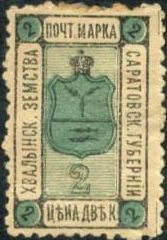
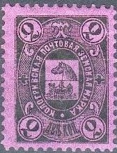
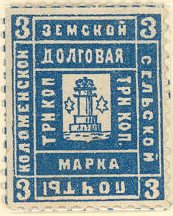
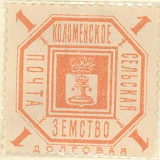

Return To Catalogue - Go to Zemstvos overview - Russia
Note: on my website many of the
pictures can not be seen! They are of course present in the
catalogue;
contact me if you want to purchase it.
2 k black and blue (with '2' under the arms) 2 k lilac 2 k blue and red (2 types)

(3 k black and blue?)
(Reduced size, 2 k blue on brown?)
2 k black on brown 2 k blue on brown (1872)
2 k black on violet
2 k green 2 k red (1888) 2 k blue (1888) 2 k blue and red (exists imperforated, 1903)
I've seen a tete-beche pair of the 2 k blue and red.

2 k blue and red with inverted center (once belonged to the
famous Ferrary).
(Reduced size)
2 k red


2 k red 2 k green 2 k blue

1 k black, brown and green 1 k black, yellow and green 2 k black, green and yellow 3 k black, red and blue 5 k black, blue and red

1 k orange (1905) 2 k green (1905) 3 k red 5 k blue, red and orange (1907, other size) 5 k blue, red and yellow (1908, other size) 5 k green and red (1908, other size)


2 k black 2 k blue and bronze (1890)

All different types
Stars placed higher
5 k red 5 k red (with numbers in corners, 1875) 5 k red (larger size, 1886) 5 k blue (1872) 5 k blue (with numbers in corners, 1880) 5 k blue (larger size, 1886) Overprinted in red (postage due stamp)

5 k blue (1889)


1 k red 1 k blue 1 k blue (inscriptions different) 2 k blue 2 k blue and black 3 k red 3 k blue 3 k blue and red
1 k blue 2 k blue 3 k blue
1 k red 1 k blue 2 k blue 3 k red 3 k blue

1 k orange (with text below circle) 1 k red (1915) 2 k green (with text below circle) 2 k green (1913) 3 k red (with text below circle) 5 k blue (with text below circle)
(Reduced size)
1 k orange 2 k green 3 k red 5 k blue

1 k orange 1 k yellow (1897) 1 k brown (1901) 2 k green 3 k red

1 k red 2 k blue


{kind=link}
{kind=link}